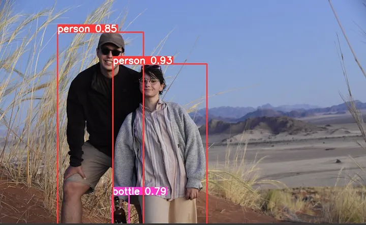
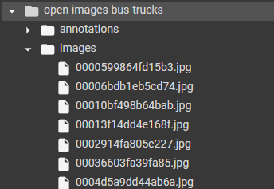
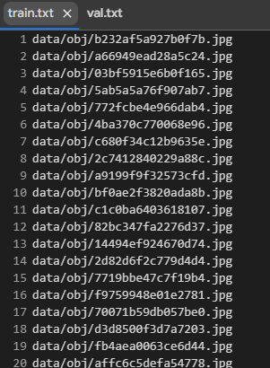
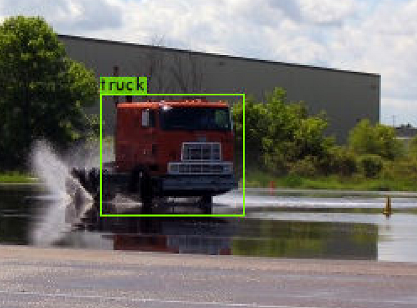

Train YOLO for Object Detection on a Custom Dataset using Python
Learn about Yolov4 and Darknet to train a Custom Object Detector.
November 2, 2024 · YOLO, Object Detection, Python

Introduction
I recently started working in the field of computer vision. And in these early days, I’m studying how the various algorithms of object detection work. Among the most well-known ones are R-CNN, Fast R-CNN, Faster R-CNN and of course YOLO.
In this article, I want to focus on the last mentioned algorithm. YOLO is the state of the art in object detection and there are endless use cases where YOLO can be used. Today, however, I don’t want to tell you about how YOLO works and its architecture, but I want to show you simply how you can launch this algorithm and make your predictions. Plus we’ll also see how it’s possible to train it on a custom dataset so you can adapt it to your data.
If you would also like to read an article of mine on the inner workings of YOLO follow me because I have proposed to write it in the next few days.
Darknet
I don’t think there is any better way to describe Darknet than the definition you can find on their site at this link.
Darknet is an open source neural network framework written in C and CUDA. It is fast, easy to install, and supports CPU and GPU
computation. You can find the source on GitHub or you can read more about what Darknet can do right here.
So all we will have to do is learn how to use this open-source project.
You can find the darknet code on github. Take a look at it because we are going to use it to train YOLO on our custom dataset.
Clone Darknet
The code I’ll show you in this article below is meant to be run on Colab, since I didn’t have a GPU with me… of course you can also repeat this code on your notebook.
What will change occasionally are the paths.
So first we go to clone the darknet GitHub repository. Colab allows us to write bash commands if we use the %%bash command.
%%bash
git clone https://github.com/AlexeyAB/darknetOnce you clone the repo you will see lots of files in your working directory, relax it looks more complicated than it is.
Now we need to reconfigure the makefile. Don’t know what a makefile is? To simplify it is a file that makes it easy to compile your code.
If you have ever written code in C, you know that the practice is to write a file file.c after which you compile it using a command like g++ etc…
This command used to compile could be very long in large projects since it has to take into account dependencies and so much more.
So it would be really laborious every time to compile by going to rewrite g++ etc…
Then what we do is create a makefile that already contains this written command inside, and all we would have to do is launch the makefile to compile the code.
The makefile usually contains within itself configuration variables that the user can set as desired.
That said what we want to do is set some variables that we find in the Darknet makefile.
So make sure you have a GPU available and run the following cell.
%%bash
cd darknet
sed -i 's/OPENCV=0/OPENCV=1/' Makefile
# In case you dont have a GPU, make sure to comment out the
# below 3 lines
sed -i 's/GPU=0/GPU=1/' Makefile
sed -i 's/CUDNN=0/CUDNN=1/' Makefile
sed -i 's/CUDNN_HALF=0/CUDNN_HALF=1/' MakefileIn this cell command sed -i for example in the first line allows you to change the OPENCV variable from 0 to 1.
The setting we set in the previous cell allows us to launch YOLO on the GPU instead of the CPU.
Now we are going to launch the makefile with the make command.
%%bash
#compile darkent source code
cd darknetNow we install a library that will serve among other things to draw bounding boxes around the objects detected by YOLO.
%%capture
!pip install -q torch_snippetsDownload the dataset
I will use an object detection dataset containing images of trucks and buses. There are a lot of object detection datasets on Kaggle and you can download one from there.
If you don’t know how to download a Kaggle dataset directly from Colab you can go and read some of my previous articles.
So I download and unzip the dataset.
!wget - quiet link_to_dataset
!tar -xf open-images-bus-trucks.tar.xz
!rm open-images-bus-trucks.tar.xzThe structure of the downloaded dataset is depicted in the following figure.

Download YOLO
Obviously, you will not have to do the YOLO training from scratch but will go and download the weights directly from the Internet.
To download the weights from YOLO4 use the following command.
!wget - quiet https://github.com/AlexeyAB/darknet/releases/download/darknet_yolo_v3_optimal/yolov4.weightsTo see if everything is working properly run the following command.
%%bash
#I had to use the flag -dont_show cause wasnt working. Try to run wiithout it
cd darknet
./darknet detector test cfg/coco.data cfg/yolov4.cfg ../yolov4.weights data/person.jpg -dont_showIn this command, we have just run
- we specify that we want the configuration of YOLO4: cfg/yolov4.cfg
- We specify to use the weights we just downloaded: ../yolov4.weights
- We are going to do the prediction on the coco dataset that you have since you cloned the repo: cfg/coco.data
- And we do the prediction of the following image: data/person.jpg
Prepare your dataset
YOLO expects to find certain files and folders set up correctly in order to do the training on your custom dataset.
First, you will need to open the file in the darknet/data/obj.names path where you put write your labels.
In Colab we can use the magic command to write directly into the file using a cell. Everything under the magic command will be copied
into the specified file.
%%writefile darknet/data/obj.names
bus
truckNow we need to modify another file to tell YOLO how many classes to expect, where to find the paths for training and
validation and where to find the file with the name of the labels.
We can do this simply using the magic command and the following lines.
%%writefile darknet/data/obj.data
classes = 2
train = darknet/data/train.txt
valid = darknet/data/val.txt
names = darknet/data/obj.names
backup = backup/So to understand it, your train txt file should look like you see in the following picture (similar for validation).

In which each line indicates where to find the training image.
The files we specified though are still empty. So we copy this data from the dataset folder we downloaded into the default one within Darknet.
!mkdir -p darknet/data/obj
!cp -r open-images-bus-trucks/images/* darknet/data/obj/
!cp -r open-images-bus-trucks/yolo_labels/all/{train,val}.txt darknet/data/
!cp -r open-images-bus-trucks/yolo_labels/all/labels/*.txt darknet/data/obj/
#add prefix 'darkent/' in front of each row in darkent/data/train.txt
!sed -i -e 's/^/darknet\\//' darknet/data/train.txt
!sed -i -e 's/^/darknet\\//' darknet/data/val.txtAs we did before we go to download the weights for YOLO. This time we take yolov4-tiny which is faster than the previous one.
Then we copy the weights to the appropriate folder inside Darknet.
!wget - quiet https://github.com/AlexeyAB/darknet/releases/download/darknet_yolo_v4_pre/yolov4-tiny.conv.29
!cp yolov4-tiny.conv.29 darknet/build/darknet/x64/Now let’s rename the configuration file that is in charge of configuring the yolov4 tiny architecture.
And after that, we’re going to edit some parameters to set the number of batches the number of classes and other parameters.
%%bash
cd darknet
# create a copy of existing configuration and modify it in place
cp cfg/yolov4-tiny-custom.cfg cfg/yolov4-tiny-bus-trucks.cfg
# max_batches to 4000 (since the dataset is small enough)
sed -i 's/max_batches = 500200/max_batches=4000/' cfg/yolov4-tiny-bus-trucks.cfg
# number of sub-batches per batch
sed -i 's/subdivisions=1/subdivisions=16/' cfg/yolov4-tiny-bus-trucks.cfg
# number of batches after which learning rate is decayed
sed -i 's/steps=400000,450000/steps=3200,3600/' cfg/yolov4-tiny-bus-trucks.cfg
# number of classes is 2 as opposed to 80
# (which is the number of COCO classes)
sed -i 's/classes=80/classes=2/g' cfg/yolov4-tiny-bus-trucks.cfg
# in the classification and regression heads,
# change number of output convolution filters
# from 255 -> 21 and 57 -> 33, since we have fewer classes
# we don't need as many filters
sed -i 's/filters=255/filters=21/g' cfg/yolov4-tiny-bus-trucks.cfg
sed -i 's/filters=57/filters=33/g' cfg/yolov4-tiny-bus-trucks.cfgTrain the model!
Now we are ready, all that remains is to launch the model train
!./darknet/darknet detector train darknet/data/obj.data ./darknet/cfg/yolov4-tiny-bus-trucks.cfg yolov4-tiny.conv.29 -dont_show -mapLastAtThis training in my case took about one hour.
Now you can run the predictions on your images to get the classes and bounding box.
from torch_snippets import Glob, stem, show, read
# upload your own images to a folder
image_paths = Glob('images-of-trucks-and-busses')
for f in image_paths:
!./darknet detector test \\
data/obj.data cfg/yolov4-tiny-bus-trucks.cfg\\
backup/yolov4-tiny-bus-trucks_4000.weights {f}
!mv predictions.jpg {stem(f)}_pred.jpg
for i in Glob('*_pred.jpg'):
show(read(i, 1), sz=20)
Final Thoughts
As we have seen using YOLO is not that complicated. There are efficient implementations that we can clone and use for our use case. In my case ‘I just used it for fun by making predictions about some photos I took this summer on my trip to Africa!😁
I have not gone into the specifics of how this algorithm works, because I would like to go into more detail in future articles using a top-down approach. So I hope you are now also able to use YOLO and play with it as I am doing!
The End
Marcello Politi
This article was published on Towards Data Science